Unit |
Titles |
Page Number |
Month |
Unit 1 |
Page Number 1 |
Month January |
|
Unit 2 |
Page Number 24 |
Month February |
|
Unit 3 |
Page Number 42 |
Month February |
|
Unit 4 |
Page Number 65 |
Month March |
|
Unit 5 |
Page Number 81 |
Month March |
|
Unit 6 |
Page Number 93 |
Month April |
PREFACE
The Science textbook for standard Seven has been prepared following the guidelines given in the National Curriculum Framework 2005. The book enables the reader to read the text, comprehend and perform the learning experiences with the help of teacher. The students explore the concepts through activities and by the teacher demonstration. Thus, the book is learner centric with simple activities that can be performed by the students under the supervision of teachers.
HOW TO USE THE BOOK?
The Third term VII Science book has Six units.
Units planned as per the index given including computer science.
Each unit comprises of simple activities and experiments that can be done by the teacher through demonstration
if necessary student’s can perform them.
Colorful info-graphics and info-bits enhance the visual learning.
Glossary has been introduced to learn scientific terms.
The “Do you know?” box can be used to enrich the knowledge of general science around the world.
ICT Corner and QR code has been introduced in each unit for the first time to enhance digital science skills.
Let’s use the QR code in the text books! How?
Download the QR code scanner from the Google play store or Apple App Store into your Smart phone.
Open the QR code scanner application
Once the scanner button in the application is clicked, camera opens and then bring it
closer to the QR code in the text book.
Once the camera detects the QR code, a URL appears in the screen.
Click the URL and go to the content page.
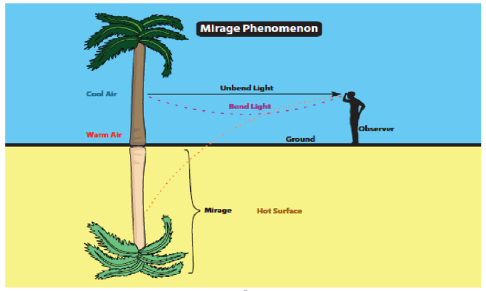
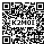
Introduction: When you enter a dark room, nothing is visible. The moment you switch on the light, everything in the room becomes visible. How do we see things with our eyes? When you look at this book, the light falling on the book is reflected and enters your eyes. Light is a type of energy that helps us to see all the things around us. Light can be detected by the human eye. We all know that light is essential for vision. Let us see more about light in this chapter.
DO YOU KNOW?
Light is the only source of energy for plants. So, they entirely depend on light. People and animals derive energy from carbohydrates, protein, and fat through their food. Plants produce food using the energy from Sunlight, carbon-di-oxide and water by the process called as Photosynthesis. Sunlight acts a vital role in the process of photosynthesis.
Objects which are able to emit light are known as light sources. Light rays can come from different sources. There are two types of sources of light.
TYPE ONE Natural sources of light.
TYPE TWO Artificial sources of light.
Sources which emit light naturally are known as natural sources of light. The Sun is the primary and the major source of natural light. Stars also produce light, in the same way as the Sun do. However, as they are much farther away than the Sun, the light from them are too weak. The moon provides light, particularly in the night. Some living organisms have the ability to produce light named by bioluminescence. It is the effect of certain chemical reactions occurring in the organism. Fireflies, jellyfish, glow worm, certain deep sea plants and some microorganisms can emit light naturally.
Apart from the natural sources, light can also be produced artificially. The different light sources that are able to produce light artificially can be put under the following categories.
DO YOU KNOW?
Is the moon a luminous object?
The moon provides light as well, but it cannot produce light by its own. The light emitted by the Moon is the light of the Sun reflected towards the Earth. When we see the Moon, we see only the Moon’s lighted part. Thus, half of the moon is always facing the Sun and receiving light from it. Hence, we receive light from the moon.
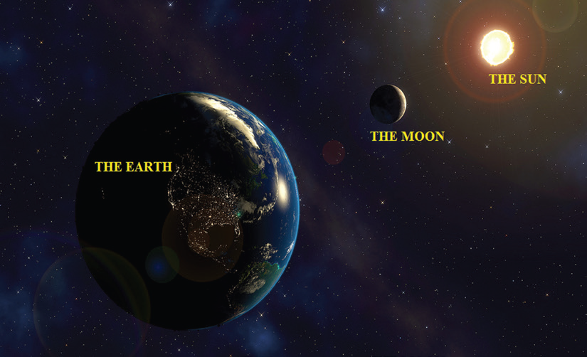
Artificial sources are manmade light sources such as flame of candle, incandescent lamp, neon lamp, Sodium lamp etcetera.
1. Incandescent Sources: When certain objects are heated to a high temperature, they begin to emit light. The glowing of hot iron rod is a kind of Incandescent light. Example: Candle, incandescent lamp.
2. Gas Discharge Sources: Passing electricity through certain gases at a very low pressure (discharging) can produce light. Example: Neon lamp, Sodium lamp
DO YOU KNOW?
We often use a kind of gas-discharge lamp that uses fluorescence to produce visible light. The electric current in the gas excites mercury vapour, which produces short wave ultraviolet light that then causes a phosphor coating on the inside of the lamp to glow in visible light.
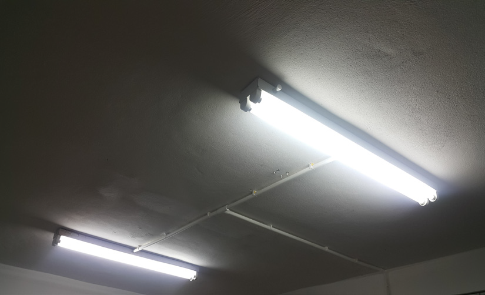
Properties of light:
In this section, we shall examine some properties of light. Light has some fundamental properties as mentioned below.
Rectilinear propagation of light
Reflection
Speed
Interaction of light with matter
Types of material according to Permeability.
Formation of shadows
Plane mirror and images.
Spectrum
The path of light:
How does light travel?
Have you ever seen the scene of light penetrating through the branches of trees in denser forest?
Have you ever seen the path of sunlight entering through the hole of a cement grill building?
Have you ever seen the path of a laser light?
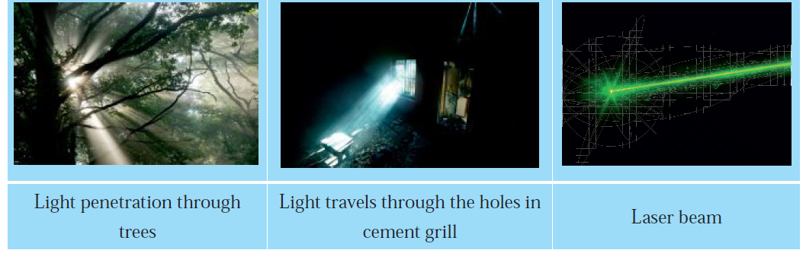
Requirement: Three empty match boxes, pin, candle, and wooden blocks.
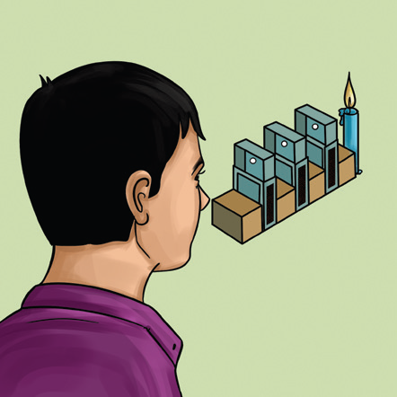
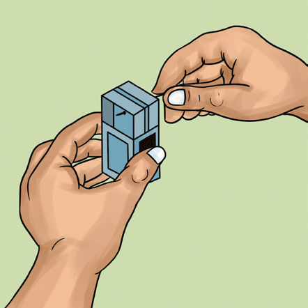
Procedure: Arrange empty match boxes and wooden blocks as shown in the figure. First, you make a hole in the inner tray of each match box such that all three holes are in the same spot. Arrange the match boxes as shown in figure. Now, adjust the three inner trays in such a way that the three holes are in a straight line. Place a lighted candle at one end of this arrangement and try to see the flame of candle from a hole at the other end. Is the flame visible?
Now, arrange the trays such a way that they are not at the same height. Try to see the flame. Is it visible? What does this activity tell you about the path of light?
Light travels in straight line, it cannot bend the path itself. This is called as the rectilinear propagation of light. This is one of the most important property of light.
DO YOU KNOW?
Al-hasan-Haytham was a scientific thinker who made important contribution to the understanding of vision, optics, and light. He observed that light coming through a tiny hole travelled in straight lines and projected an image onto the opposite wall. Based on such experimentation, he concluded that vision is accomplished by rays coming from external luminous sources and entering the eye, rather than through rays emitted from the eye as was then commonly believed. He is the first one to experiment with light and found important properties like the rectilinear propagation of light.
Pinhole Camera: Pinhole camera is a simple device which helps us to understand about the rectilinear propagation of light.
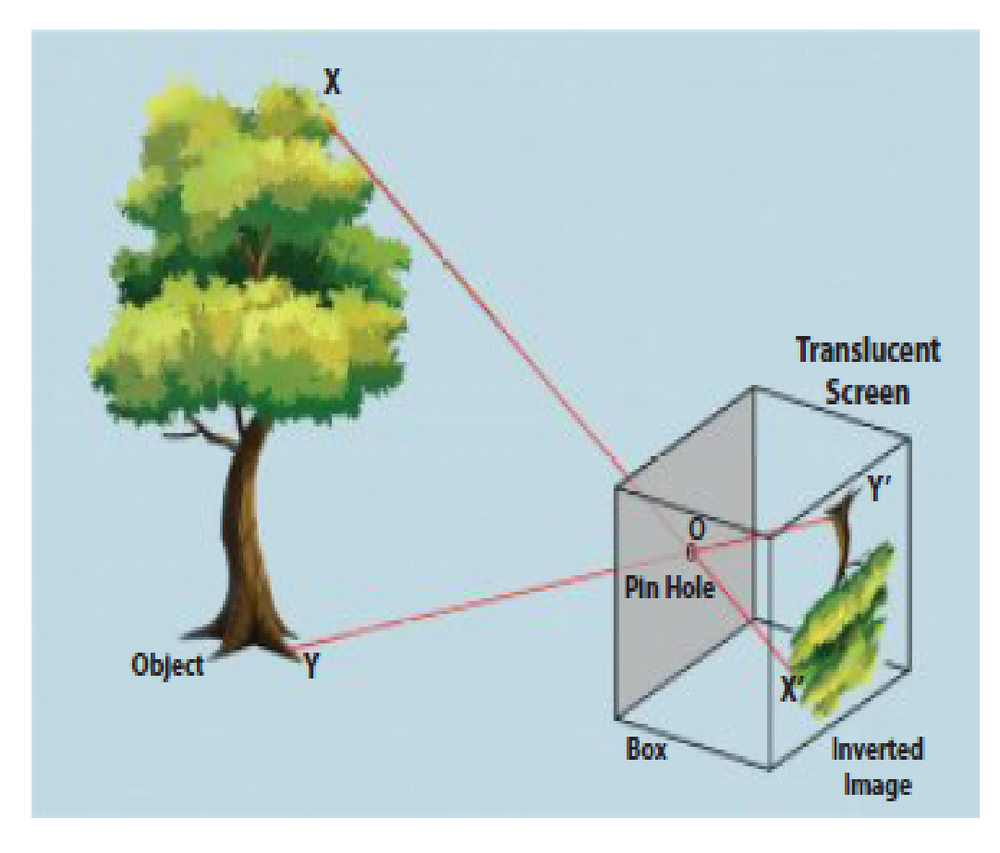
The above picture shows a model of a pin hole camera. O is small hole by a pin. XY is the object and Y prime X prime is the image of XY. As light travels in straight line, one light ray from X travels along the X O strikes the screen X prime.
Make your pinhole camera
Requirement: Two rectangular pieces of thick paper, carbon paper, a semi-transparent paper, adhesive
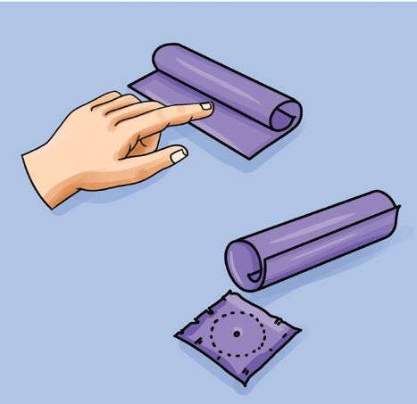
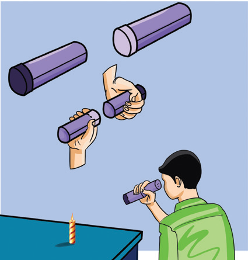
Procedure: Make two tubes using thick paper as shown in figure. One tube should be slightly smaller in diameter so that it can slide into the other tube without leaving much gap between the tubes. Fix a carbon paper to one side of the tube of greater diameter. Make a hole with a pin at the center of the carbon. Close one end of the second tube with the butter paper. Slide the smaller tube into the bigger one such a way that the butter paper is inside. Keep a lighted candle on a table and look through the hole with black side towards the candle. If you go closer to the candle, you will see a smaller, but brighter image. You can also change the image size by adjusting the tubes.
Use the pin-hole camera to see things in sun light outside the window and see how good an image you get. What are your observations about the image? Is it straight, inverted, bright and sharp?
In similar way, another light ray staring from Y and travels along Y O strikes the screen Y prime. Similarly, all the rays in between X and Y fall on the screen between Y prime and X prime. Thus, Y prime X prime becomes the image of X Y. The image produced is temporary if a simple paper is used. The image can be made permanent if the paper is replaced by a photographic plate.
Reflection:
A mirror reflects our face. A still water body like a pond reflects the scenery around it. When we see our face in the mirror, we see the light rays from our face bouncing off the surface of the mirror. How the rays of the light are reflected?
Take a plane mirror. Cover it with black paper. Cut a small slit as shown in the figure. If You shine light on the mirror from a torch light or sunlight, you will get a small ray of light. We can use this to study the properties of light.
DO YOU KNOW?
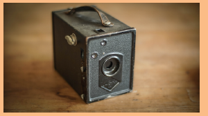
Before the advancement of camera, Pinhole camera was used to photograph movement of the sun over a long period of time. This type of photography is known as solography and be used for observing and recording solar eclipses. And it was also used to take photograph of stationary objects.
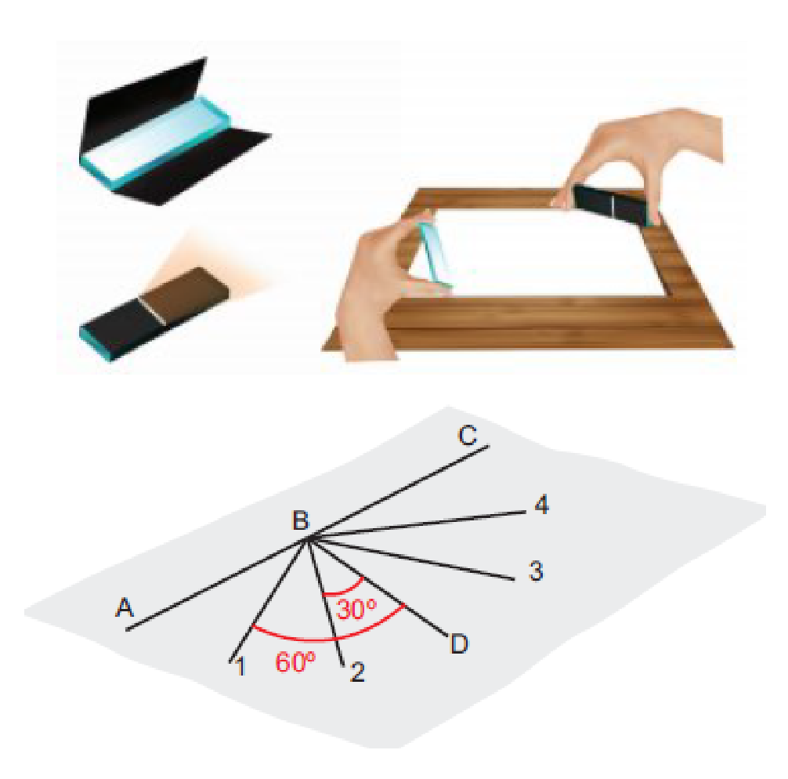
Place a blank white sheet on a level groundout in the open. Choose a place where partly the sheet gets sunlight and partly it is in shadow. Hold the mirror with the slit facing the sun. You can see a straight ray of light reflected from the slit on the paper. Hold another mirror to reflect this ray. Observe well. The light falling on the mirror is called as incident ray and the light reflected is called reflected ray.
Relationship between the incident ray and reflected ray?
Draw a straight-line ABC and angles as shown in the figure above. The line 1 is at 60 Degree from BD, 2 at 30 Degree from BD. Now, the line 4 at 60 Degree from BD and line 3 at from 30 Degree BD. The line BD is perpendicular to ABC. Hold the mirror along the line ABC. Use the mirror with slit and make a ray go along line 1 and reach the mirror at point B. Observe where the reflected ray is. Is the reflected ray go along 4?
Now, try keeping the mirror with slit and make the incident ray go along line 2. Now do we see that the reflected ray is a long line 3?
Line BD, which is perpendicular the mirror surface is called as normal. The angle between the incident ray and the line BD is called angle of incident. Similarly, the angle between reflected ray and the normal is called as angle of reflection.
Can you make out relationship between the angle of incident ray and the angle of reflected ray? Yes. Is it not obvious that the angle of incident is same as the angle of reflection?
Terms used in reflection of light:
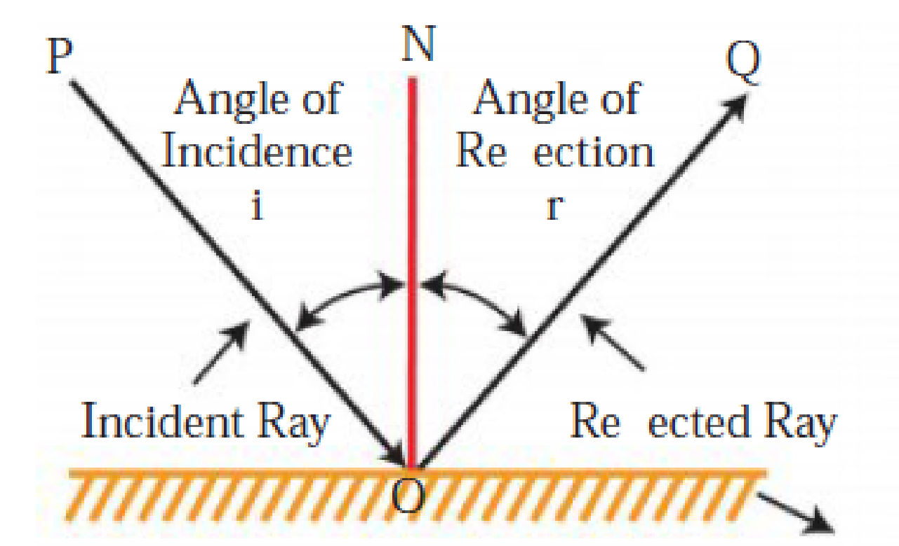
Incident ray: The ray of light that falls on the surface of the reflection materials. In the figure, PO is the incident ray.
Reflected ray: The ray of light that comes from the point when the incident ray falls on the reflection material. In the figure, O Q is the reflected ray.
Point of incidence: The point of which are incident rays strike the reflecting surface is the point of incidence. In the figure ‘O‘ is the point of incidence.
Normal: The perpendicular line drawn from the point of incidence to the plane reflecting the surface is called normal. In figure, O N is the normal.
Angle of incidence: The angle formed between the incident ray P O and the normal ‘O N’ is angle of incidence. It is denoted by angle i
Angle of reflection: The angle formed between the reflected ray O Q and the normal O N is angle of reflection. It is denoted by angle r
Laws of reflection:
Point number one: The angle of incidence is always equal to the angle of reflection angle i equal to angle r
Point number two: The incident ray, the reflected ray and the normal at the point of incidence lie on the same plane.
Example 1 In the figure, the incident ray makes 27 degree with the normal, then find the angle of reflection.
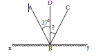
Solution: Angle of incidence equal to 27 degree According to the laws of reflection, the angle of reflection equal to Angle of incidence equal to 27 degree
Example 2:
A light ray strikes a reflective plane surface at an angle of 43 degree with the plane surface.
Question number one Find the angle of incidence.
Question number two Find the angle of reflection.
Question number three Find the angle between the incident and the reflected ray.
Question number four Find the angle between the reflected ray and the plane surface.
Solution:
We use the diagram shown below to answer the questions.
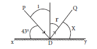
a) Angle of incidence
angle i equal to 90 minus 43 equal to 47 degree
b) angle of reflection
angle r equal to angle i equal to 47 degree
c)angle i plus angle r equal to 47 plus 47 equal to 94 degree
d) angle x equal 90 minus angle r equal 90 minus 47 equal to 43 degree
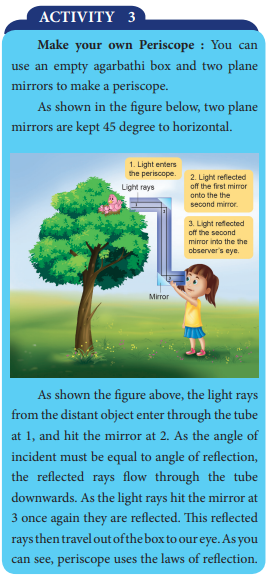
On a mirror we can see our image, but not on the wall. Why? Both the surface reflects light. Only because the reflected light comes to our eyes, we are able to see it. If the wall was not reflecting light, then we cannot see it.
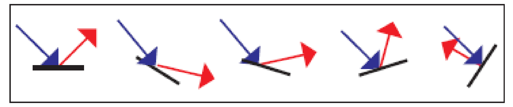
We saw earlier that the light reflects off surfaces in a very predictable manner, in accordance with the law of reflection. The laws of reflection holds good for all surfaces irrespective of the shape. Vertical surfaces, angled surfaces, and even over the curved surfaces, the laws of reflection hold good. As long as we can draw the normal, perpendicular to the surface at the point can be drawn, the angle of incidence at that point will be equal to angle of reflection.
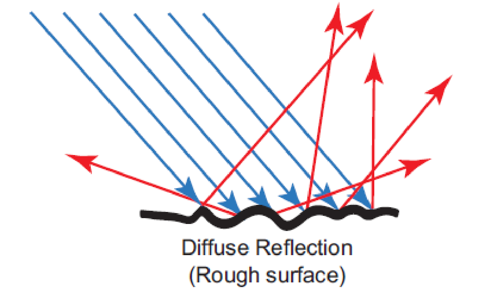
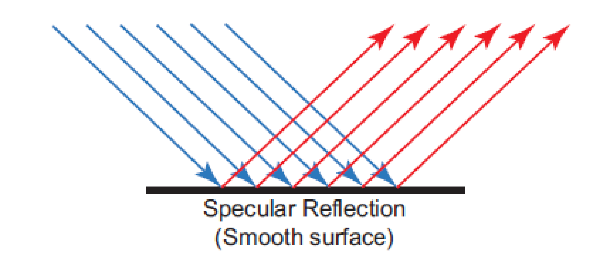
The law of reflection is always observed regardless of the orientation of the surface. If the surface is smooth, and flat, all points on it have the normal in the same direction. Therefore, a set of parallel rays striking the surface will be reflected at an angle, but the rays themselves will still remain parallel to each other.
However, consider a surface which is not smooth. Such as the surface of a wall. What happens when the light ray hits the rough surface? Roughness of the wall means that each individual ray meets a surface which has a different orientation. The diagram below depicts the case. Five incident rays labelled as A, B, C, D and E approach a surface. The normal line at each point of incidence is shown in black and labelled with an N. In each case, the law of reflection is followed, resulting in five reflected rays labelled A prime , B prime , C prime , D prime and E prime . While the incident rays were parallel to each other, the reflected rays are going in different directions. The result is that the rays of light are incident upon the surface in a concentrated bundle and are diffused upon reflection.
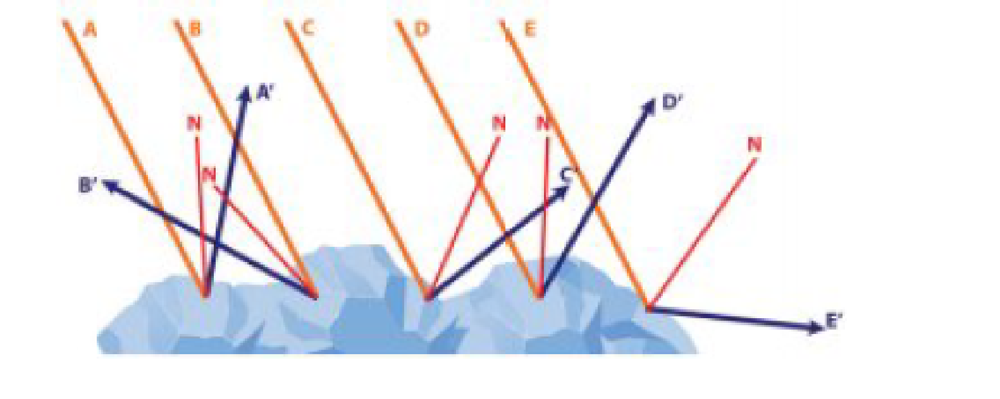
Broadly, we can say that there are two types of reflection. If the surface is smooth then we have specular reflection. The parallel light rays striking the surface gets reflected, yet individual reflected rays remain parallel.
If the surface is rough, then we have diffused reflection. Light rays, after reflection, go in many directions.
In fact, during the day, our classroom is illuminated by sunlight. Walls and floors are exposed to diffuse reflection. Suppose walls were smooth mirror like. Then sunlight entering through the window will get bounced by the floor at an angle above towards the roof. And it will never get reflected to left or right. That is left and right walls will remain dark. However, walls and floors are not smooth surfaces. Therefore, incident light from the window get bounced in all directions that the whole room is illuminated with diffused light.
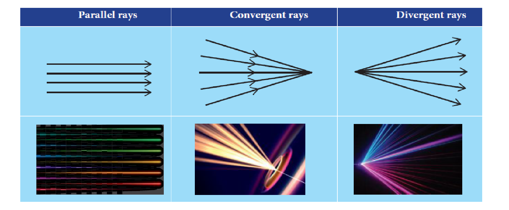
Generally light is not a single ray, but a bundle of rays which are called as a beam of Light.
A light beam can be a bundle of parallel rays, convergent rays, or divergent rays. Let us look at the light coming from the Sun. The rays of sunlight are parallel. Often the headlight of car gives parallel rays. However, look at the rays of light coming out of a candle. Light rays go in all directions, from the candle fire. These rays are divergent. Light rays from a flashlight is also divergent. Using lenses, we can converge light rays. Using a lens, you can focus sunlight at a point. That is what we are making the light rays to converge.
Speed of light:
When lighting a bulb in a dark room, light spreads the whole room quickly. This is because the light travels very fast. Light travels three lakh kilometers per second in air or vacuum. In theory, nothing can travel faster than light
Interaction of light with matter:
Take a piece of clear glass, a paper and a metal sheet. Shine a light from one side of each object and see if the light penetrates on the other side. Readily, we can see light enters and comes out of the other end of clear glass, whereas the light is bit dim through a paper. Light does not pass through metal sheet. Depending upon permeability, materials can be classified into three categories.
Transparent Material:
Materials that allow light to pass through completely are known as transparent material.
Example:
Eye glasses, clear drinking glass, clear water, face glasses used in buses.
Translucent Material: Objects that allow light to pass through partially are called translucent material. For Example, we cannot see the image of someone who stands behind a rough window glass, because it allows only a part of light from the person.
Opaque Material:
Materials that are not able to allow light to pass through, are called opaque material.
Example: Wall, thick card board, stone, etcetera.
Let’s categorize transparent material, translucent material and opaque material among the given materials (Clear plastic ruler, cellophane paper, some water in a glass jar, tissue paper, drinking glass, beaker, tap water, kerosene, coconut oil, note paper, card board, milk, diluted milk, aluminum foil, thick coloured plastic lid, rough glass piece, measuring glass with water, wooden piece) Place all the materials given above in the dark room. Focus a torch light on one side of each materials. Inspect the light coming out at the other side of each material and then classify the materials in the table.
Table column message.
Serial number |
Transparent material |
Translucent material |
Opaque material
|
|
|
|
|
|
|
|
|
|
|
|
|
|
|
|
|
|
|
|
|
|
|
|
|
Shadows:
How are shadows formed?
As we saw earlier, light is obstructed by certain materials. Light travels in a straight line. Hence it cannot go around such objects. That is why we see shadow. Shadow is always against, opposite side of light source. It is caused by opaque objects that stop light from propagating.
Parts of shadow:
When an opaque object is placed in the path of light from a point source, a uniform dark shadow will appear on the screen. This is shadow is called as umbra. When an opaque object is placed in the path of light coming from a broad source of light, a small umbra will appear on the screen and an illuminated shadow area appears around umbra. This illuminated shadow area is called as penumbra. The penumbra always surrounds the umbra. The umbra is the darkest part of a shadow. In this part, light rays are completely prevented by the opaque object. The lighter shade of shadow is the penumbra.
Properties of shadow:
Property one is All objects do not form shadows. Only opaque objects form shadows
Property two is Shadows will be formed in the opposite side of light source
Property three is It cannot be determined the characteristics of an object by its shadow.
Property four is the shadow will be always darker, whatever may be the color of light rays
Property five is Light source, opaque object is shadow all are in a straight line.
Property six is the size of shadow depends upon the distance between light source and object and the distance between object and the screen.
Arrangement |
Activity |
Observation |
You Learn |
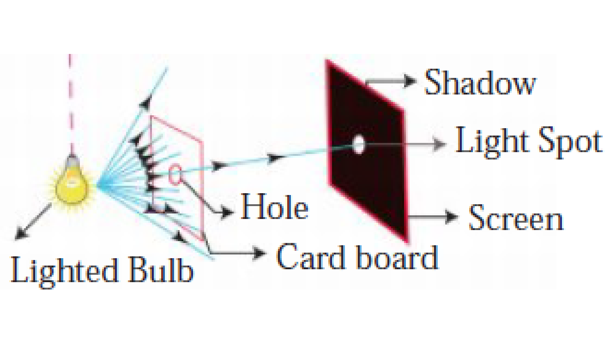 |
Place a lighted bulb in front of a rectangular cardboard with a hole at the center |
A shadow with a spotlight appears in the screen. |
Light rays are passing only through the hole and are not allowed by the remaining part of cardboard |
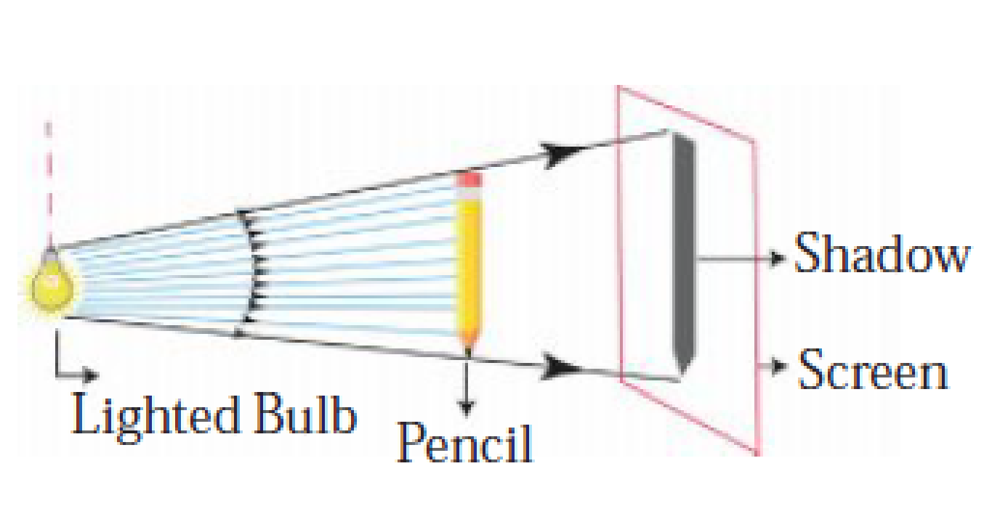 |
Place a pencil in the path of light ray coming from a bulb |
A shadow of pencil appears in the screen |
The size of the shadow is proportional to the size of the opaque objects |
Requirement :
A white screen, a cylindrical opaque object and three bulbs in different sizes.
Use the three different size lamps and examine the umbra and penumbra formed. Keep the distance between the lamp and the cylinder, cylinder and the screen same. As the size of the lamps grow smaller, the umbra region begins to enlarge. If the size of the lamp is a point, then there will be no penumbra. There would be only umbra shadow. Can you tell what the reason is for that?
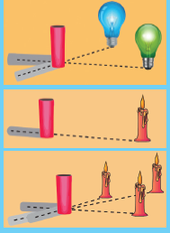
Eclipses:
An eclipse is an incident, when any astronomical object is partially or fully obscured due to the placement of another astronomical object in the presence of light. Thus, solar and lunar eclipses are occurring that are due to the property of light known as the rectilinear propagation of light.
Solar eclipse:
Solar eclipse occurs, when the moon arrives between the sun within bracket S and the earth within bracket E. The shadow of the moon appears on the earth at A as shown in picture. Hence, those who are at the region A are unable to see the Sun instantly. This is solar eclipse. But those who are at the region B and C are able to see the sun partially.
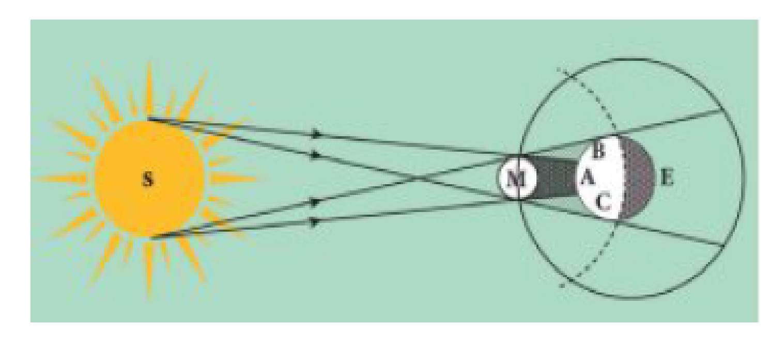
Lunar eclipse:
Lunar eclipse occurs, when the earth within bracket E comes between the sun within bracket S and the moon within bracket M. The earth prevents light coming from the sun and makes shadow on the moon. This is lunar eclipse.
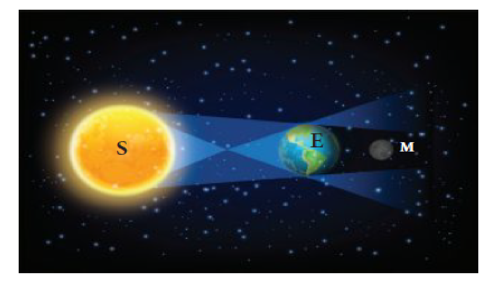
Try This:
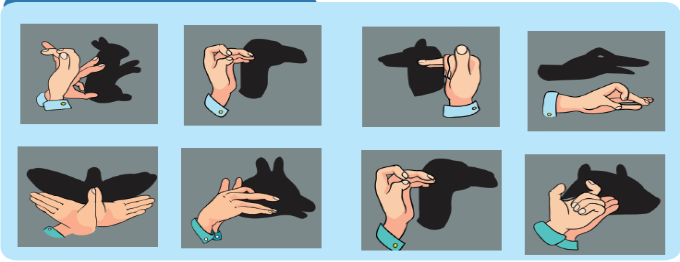
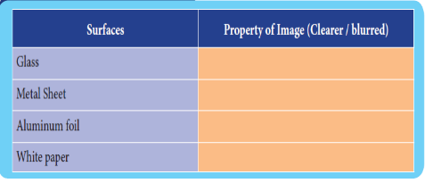
Plane Mirror and Reflection:
A polished or smooth surface with in bracket like glass which forms image by reflection is known as mirror. A plane mirror is a mirror with a flat reflective surface. A plane mirror makes an Image of objects in front of it.
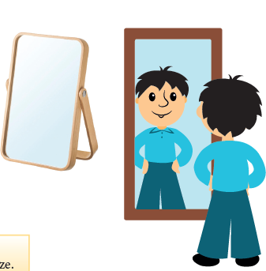
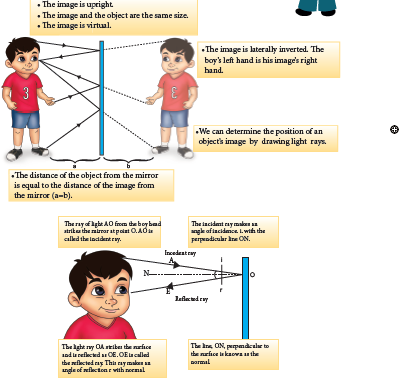
Do you know?
Optical fibre is a device that works on the principle of total internal reflection by which light signals within bracket huge data can be transmitted from one place to another place with a negligible loss of energy in a very short time. It consists of a cable having one or more thin flexible fibres with a glass core through which light signals can be sent. Optical fibre can be twisted and bent easily. When a light a ray of light is incident at one end of the core of optical fibre, it suffers total internal reflection at the many places inside the fibre and emerges at the other end with negligible loss of energy. The data or information in the form of pulses of light, can be sent through bundles of optical fibres. Optical fibres have become very important in high-speed communications, such as cable TV and high speed broadband services. Fiber optic cables are able to carry more signals than traditional copper cable telephone lines.
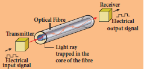
Real and virtual images
We have seen images being formed in a pinhole camera and a mirror. Can we see what is different in both of these images? Firstly, the image of the pinhole camera was formed on a screen. While the image made by the mirror is not obtained on a screen. The images that are obtained on a screen are called ‘real image’ and that which cannot be obtained on a screen ‘virtual image’. Also notice that the image on pinhole camera was upside down. While the mirror image was upright.
Properties of Image formed in a plane Mirror.
Image formed in a plane mirror is upright |
Image formed in a plane mirror is virtual |
The image is of the same size as the object |
The distance of the image from the plane mirror is equal to the distance of the object from the mirror |
Image is laterally inverted |
There are eight letters in the word.
EINSTEIN
1. Write the word in front of a plane mirror shown in diagram.
2. Write down how these letters appear in the mirror.
3. How many of these letters appear to be different, when the word is reflected?
4. Write down the letters that appear to be the same.
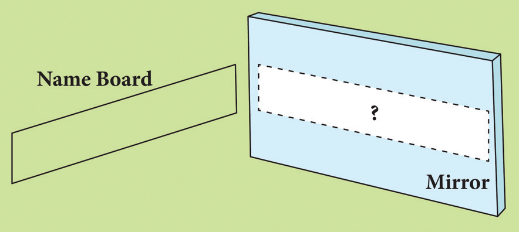
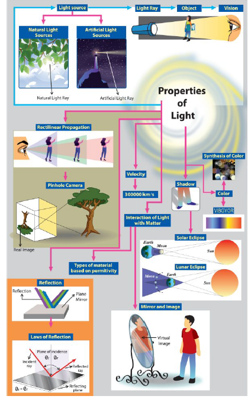
Color: Color of sunlight: Light is a form of energy in the form of a wave that simulates that retina of our eyes. Visible light is a spectrum of a number of waves with different wavelength range from 400 nanometre to 700 nanometre within bracket 1nanometer equal to 10 power within bracket minus 9 meter each wave has a definite wavelength represents a particular color. The band of visible light is VIBGYOR.
V Violet
I Indigo
B Blue
G Green
Y Yellow
O Orange
R Red
Violet color has shorter wavelength and red color has longer wavelength. When light ray of wavelength within bracket Color strikes the retina of our eye, our brain perceives that specific color. When all colors of visible light strike the retina of our eye at the same time, our brain perceives white. This shows, white is not a color at all. But it is the combination of all the colors of the visible light spectrum. If all the wavelengths with in colors of visible light spectrum give appearance of white similarly, the observe of all their wavelengths of visible light, will lead appearance of black.
DO YOU KNOW?
Why is the word “AMBULANCE” written backwards in ambulance vehicle? This is due to lateral inversion phenomenon due to which the left side of an object appears to be right side of the object in its image in a reflecting medium within bracket mirror. so that drivers see the word the right way around in their rear view mirror
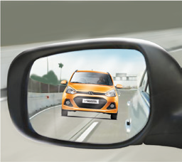
What is prism:
A prism is an object made up of a transparent material, like glass or plastic that has at least two flat surfaces that from an acute angle. With in bracket less than 90 degree
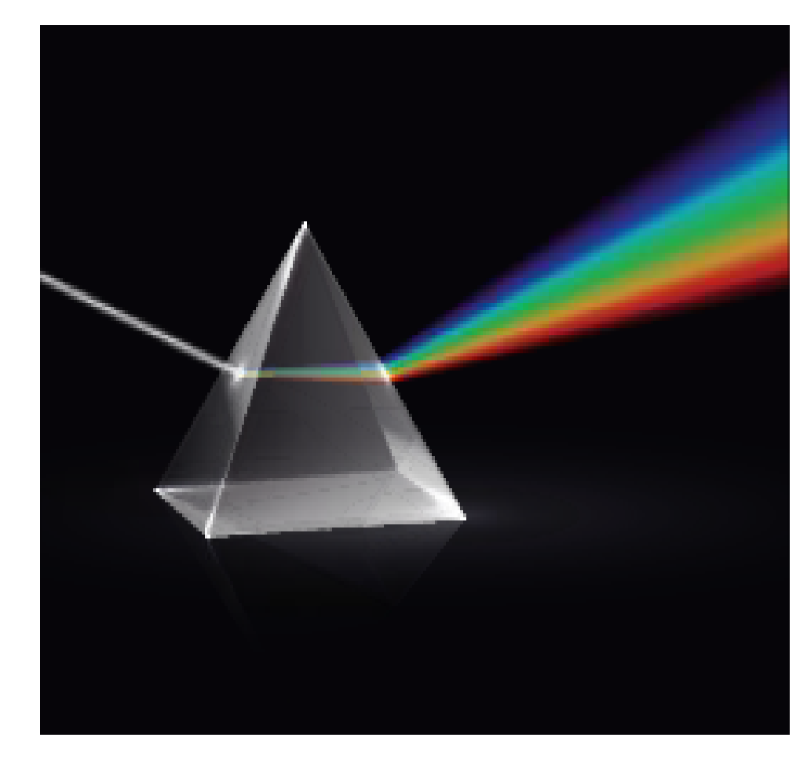
We have seen that white light is made of different colours and we can split white light. Is it possible to do the reverse? That is, can you get white colour by mixing colours? Try this activity.
You need oil pastel and white paper. Take different oil pastel colours. Choose colours which are exactly seen on the rainbow. Apply colours over each other on a white paper. Did you get white colour?
Difference between the images formed in Pinhole camera and Plane mirror |
|
Images formed by Pin hole camera |
Images formed in Plane mirror |
The image is real |
The image is virtual |
The image may not be equal to the size of the object |
The image is equal to the size of the object |
The image is inverted |
The image is erect |
Let’s make a rainbow
You must surely have seen a rainbow in the sky. Why don’t you try making one at your classroom?
Place a flat but deep pan. Place this pan where there is direct sunlight. Place a plain mirror in the pan as shown in the diagram, so that you see sunlight reflected on you ceiling or on a white wall. Next slowly pour water into the pan. At particular level of water, you will get a beautiful rainbow colors on the wall. If the colours are not clear adjust the position of the mirror to bring it into focus. This arrangement of colours in sunlight is called spectrum.
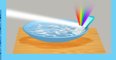
Box news
Do you know?
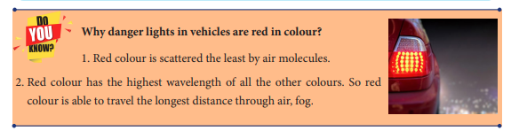
Why danger lights in vehicles are red in colour?
1. Red colour is scattered the least by air molecules.
2. Red colour has the highest wavelength of all the other colours. So red colour is able to travel the longest distance through air, fog.
When white light is passed through a prism as shown in the figure, the colors of the rainbow emerge from the prism. This phenomenon is called dispersion of light, and the band of colour is called as spectrum.
Newton Disc:
Newton suggested a process of mixing different colors to make white color by setting an arrangement as shown figure below. Newton Disc is a card board disc with seven equal sectors colored red, yellow, orange, green, blue, indigo and violet. When the disc turned quickly, the retina receives the sensation of the spectrum simultaneously and disc appears white. Using this disc, one can explain that white is a combination of VIBGYOR.
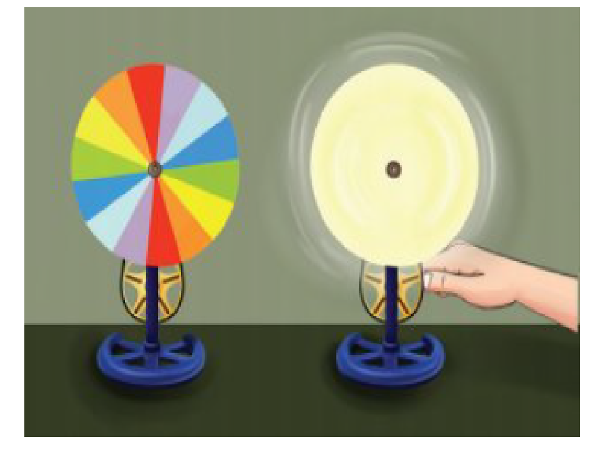
You need Gelatin papers of Red, Blue and Yellow. Fold each gelatin paper three times and look different colour objects listed below through each folded paper. Observe what colour each object has. Write your observations in the table.
object |
Original colour of object |
Colour through Red gelatin paper |
Colour through Blue gelatin paper |
Colour through Yellow gelatin paper |
Blue sky |
|
|
|
|
Orange flower |
|
|
|
|
Yellow banana |
|
|
|
|
Leaves |
|
|
|
|
Brown trouser |
|
|
|
|
White shirt |
|
|
|
|
Black board |
|
|
|
|
We know that white shirt will reflect white light and we have seen that white light consists of different colours. When we look at the white shirt through the yellow gelatin paper, we see it as yellow in colour. From this, we can say that the yellow gelatin paper did not allow any other colour except yellow to pass through. Similarly, we conclude that red gelatin paper allows only red light and blue gelatin paper allows only the blue light.
Synthesis of colors:
Synthesis of color is the method of creating color by mixing various proportions of two or three distinct colors of light. These distinct colors are Red, Green and Blue called as primary colors.
Equal proportions of two primary colors create a secondary color.
Magenta, Cyan and yellow are called secondary color.
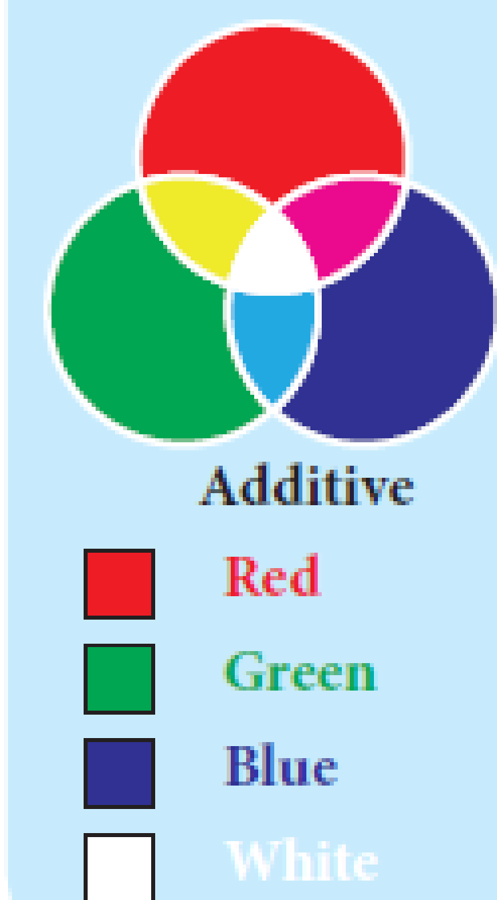
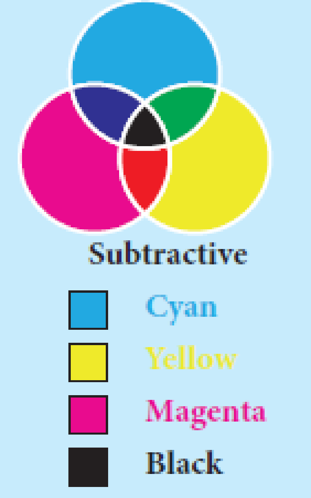
1 Red |
Plus |
1 Blue |
Equal to |
Magenta |
1 Blue |
plus |
1 Green |
Equal to |
Cyan |
1 Green |
plus |
1 Red |
Equal to |
Yellow |
Equal proportions of all three primary color create white.
1 Red |
plus |
1 Blue |
plus |
1 Green |
Equal to |
white |
Choose the correct option
1. Light travels only in a DASH . It is because of this property that DASH are formed
a. curved line, shadows
b. straight line, shadows
c. straight line, reflection
d. curved line and then straight line, shadows
Answer: b. straight line, shadows
2. Light that hits a mirror gets DASH
a. Transmitted
b. Reflected
c. Absorbed
d. Refracted
Answer: b. Reflected
3. DASH Surface reflects the light well.
a. water
b. compact disc
c. mirror
d. stone
Answer: c. mirror
4. Light is a form of DASH
a. matter
b. energy
c. medium
d. particle
Answer: b. energy
5. You can see your image in polished floors, but not in wooden table because DASH
a. regular reflection takes place in wooden table and irregular reflection in polished floor.
b. regular reflection takes place in polished floor and irregular reflection in wooden table
c. regular reflection takes place in both polished floor and wooden table
d. irregular reflection takes place in both polished floor and wooden table
Answer: b. regular reflection takes place in polished floor and irregular reflection in wooden table
6. Choose the translucent substance from the following
a. glass
b. wood
c. water
d. Clouds
Answer: d. Clouds
7. Reflection occurs, when the light DASH
a. about to reach a surface
b. approaches a surface
c. passes through a surface
d. None of these
Answer: b. approaches a surface
8. The image formed by a pinhole camera is inverted because
a. light travels in straight lines
b. light rays become laterally inverted as they pass through a pinhole camera
c. light rays pass through the pinhole
d. light rays get reflected
Answer: a. light travels in straight lines
9. Which of the following facts explain how shadows are formed?
a. Light travels in straight lines
b. Opaque bodies do not allow light to pass through them
c. Reflection occurs at a smooth surface like mirrors
d. Lateral inversion happens
a. both A and B
b. both A and D
c. both B and C
d. only A
Answer: a. both A and B
Fill in the blanks
1. A plane mirror produces a DASH image
Answer: virtual and erect
2. A DASH reflection helps us to see the objects
Answer: regular
3. The light ray gets DASH when it falls on any polished surface.
Answer: reflected
4. Sunlight is a blend of DASH colors
Answer: seven colours
5. The splitting of white light into seven colors is called DASH
Answer: dispersion
6. The moon DASH sun light
Answer: reflects
7. The sunlight can be split into its constituent colors using DASH
Answer: prism
8. Reflection of light from rough surface is called DASH reflection
Answer: irregular
Say TRUE or FALSE
1. The image of right hand in a plane mirror looks like a left hand
Answer: True
2. Rainbow is formed by dispersion of which light by water drops
Answer: True
3. The image formed by the plane mirror is laterally inverted, hence the image seen through the periscope is also laterally inverted
Answer: False, Correct statement: The image formed by the plane mirror is laterally inverted, hence the image seen through the periscope is This is because in periscope, image is reflected by two mirrors.
4. We see planets because they reflect light from the sun
Answer: True
5. We see a book because it reflects the light that falls on its surface
Answer: True
6. The image formed in a pinhole camera is always inverted
Answer: True
7. The image formed in a pinhole camera is always the same size as the object
Answer: false,
Pinhole camera closer to the object, a larger image formed
8. The image formed in a plane mirror is upside down
Answer: false
Correct statement: The image formed in a plane mirror is erect.
9. A plane mirror is opaque
Answer: True
10. A shadow is formed on the same side of the object as the source of light.
Answer: false, Correct statement: A shadow is formed on the side of the object as the source of light.
11. we are able to see things around us with the help of regular reflection
Answer: True
12. After passing through a prism, white light splits into a band of seven colors
Answer: True
4. Match the following
1. Rectilinear propagation - Primary source of light
2. Plane Mirror – Non luminous object
3. Firefly - Periscope
4. The Moon - Pinhole camera
5. Wide light source - Spectrum of light
6. Regular reflection - luminous object
7. The sun - Penumbra
8. Band of seven colors - Glossy surface
Answers
1. Rectilinear propagation - Pinhole camera
2. Plane Mirror - Periscope
3. Firefly - luminous object
4. The Moon – Non luminous object
5. Wide light source - Penumbra
6. Regular reflection - Glossy surface
7. The sun - Primary source of light
8. Band of seven colors - Spectrum of light
5. Answer the following questions in short
1. With the help of a diagram, state the laws of reflection
2. Figure shows a pencil placed above a mirror
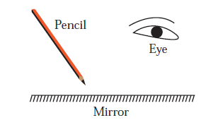
a. Draw its image formed by the mirror
b. Show how light rays from the object are reflected at the mirror to form the image for the eye.
3. A person is looking at the image of a tree in a mirror placed 3.5 m in front of him. Given that the tree is at 0.5 m behind his eyes. Find the distance between the image of the tree and his eyes. What are needed to see an object?
4. What are luminous objects?
5. Is the moon a luminous object?
6. What are the three types of materials based on the absorption of light?
7. What are the parts of shadow?
8. What are the properties of shadow?
9. What is plane mirror?
10. What is prism?
11. What do you mean by visible light?
12. Write the items given here in the correct column (Stars, brick walls, plants, mirror, planets, electric light bulb, candle)
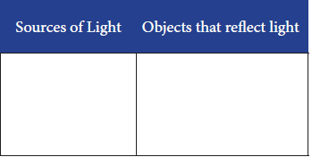
13. A boy of height 1m 45 cm is standing in front of a long mirror at a distance of 2 m. From this information, fill up the following sentences:
a. The distance between the boy and his image is
b. The height of the image is
c. When the boy moves 1m forward, the distance between him and his image is DASH
14. Draw a diagram of a pin hole camera showing the rays of light passing between the Object and its image
15. Why is the writing on the front of an ambulance back to front as shown in the picture?
16. Explain with examples, why some capital letters look the same in a mirror but others are reversed.
17. Two plane mirrors M1 and M2 are placed perpendicular with each other, as shown in figure. The ray AB makes an angle 39 ° with the plane mirror M1, then
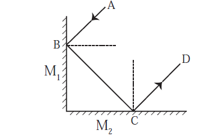
1. The reflected rays are,
2. The incident rays are,
3. What is the angle of incident corresponding to the ray BC?
4. What is the angle of reflection corresponding to the ray CD
18. Rajan was playing with the mirror images of a clock. He looked at the clock in his room.
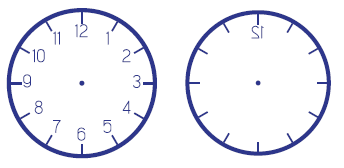
It was showing 1 hour 40 minutes. Draw the position of the hands on the real clock and on its mirror reflection. Write below the picture what time each picture is showing.
19. What is reflection of light?
20. If a ray of light is falling on a plane mirror at an angle of 50 degree is formed, what will be the angle of reflection?
21. What do you mean by lateral inversion?
22. How do you obtain a spectrum of light?
23. Why do we see white color in Newton’s disc, when we rotate it very fast?
24. What is a shadow? What things are necessary for the formation of a shadow?
Answer the following questions in detail
1. What are regular and irregular reflection? Explain with the help of diagrams
2. What are the difference between luminous and non-luminous objects? Give two examples of each.
3. Write about two everyday situations that tell you that light travels in a straight line.
4. Differentiate between a reflection and a shadow
5. What are the characteristics of an image formed in a plane mirror?
6. Describe the pictures.
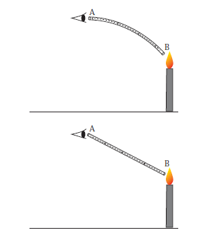
7. Define the following terms
a. Incident ray
b. Reflected ray
c. Normal
d. Angle of incidence
8. Compare the images formed by plane mirror with that by pinhole camera
ICT CORNER
Explore the activity to know about law of reflection.
PROCEDURE:
Step 1: Type the following URL in the browser or scan the QR code from your mobile to open the activity page.
Step 2: Click the torch to see how the light ray reflects off the mirror and drag the torch to different angles. You can learn the angle of incidence at that point will be equal to angle of reflection.
Step 3: Next Scroll down and select the prism. Click the torch how the prism changes the path of the light ray.
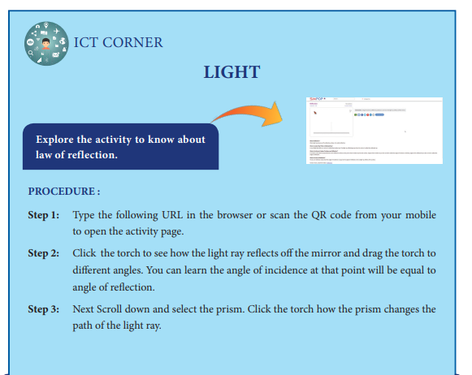

Light URL:
https://simpop.org/reflection/reflection.htm
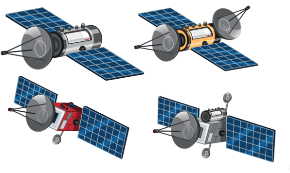
The students are able to
“My goal is simple. It is a complete understanding of the universe, why it is as it is and why it exists at all.” Stephen Hawking
Starry night sky is a wonder which has fascinated humans from time immemorial. Our ancestors have observed and documented the objects seen in the night sky. The field of study of the universe is called astronomy. We know that there are billions and billions of stars in the universe, although only about 6000 or so are visible to naked eye. Have you ever thought of the size of our universe? The universe is unimaginably and infinitely big. Universe is commonly defined as the totality of everything that exists or is known to exist. Even though the spatial size of the entire universe is still unknown, it is possible to measure the observable universe.
The universe consists of galaxies, planets, stars, meteorites, satellites and all other forms of matter and energy. And it is a world of wonder. Let us move into this world of wonder to know more interesting facts about the place of residence of our solar system.
Sky is a wonder. Sun, Moon, stars all appear to rise in the East and move towards the west, giving us an impression that all these objects are going around the Earth. Just as in a moving bus the distant mountains and trees appear to move backwards, perhaps really Earth is spinning and that is why Sun, Moon and stars appear to go around the Earth. Does the Earth revolve around the Sun, or the Sun revolves around the Earth? How do you know about it?
When you look at the night sky you can see lot of twinkling objects. But a few of them differ from the others. They don’t twinkle and while the other stars hold a fixed pattern from night to night, these drifts. They wander across the sky, moving against the backdrop of stars. These are called planets. Our ancestors observed this and they imagined a universe with the Earth at the center, the stars in the distant background, and Sun, Moon and the planets orbiting around us.
Two observations supported the idea that Earth was the center of the Universe. First, from anywhere on the Earth, the Sun appears to revolve around the Earth once in a day. While the Moon and the planets have their own motions, they also appear to revolve around the Earth about once per day. Even the celestial sphere studded with stars appears to rise and set in the evening, and make one complete rotation in a year. Second, the Earth seems to be unmoving from the perspective of an earthbound observer; it feels stationary.
As civilization progressed the early astronomers found two types of motion of celestial objects. Let us take the case of Moon. On a daily basis Moon appears to rise in the east and set in the west. Thus, one can say that Moon is going around the Earth with a period of one day. But for a careful observer, it was clear that the Moon was also exhibiting another motion. Suppose the Moon is appearing in the sky today near the star Asvini, tomorrow we will observe that the Moon is near the star Bharani, a star east of Asvini. And the next day it will be near the star Kartikai, east of Bharani. After 27 days, moving little by little eastwards, the Moon again stations itself near asvini. Thus, everyday Moon appears to move from east to west in one day where as it appears to go in a circle from west to east in the background of stars in about 27 days.
These two motions were puzzling. Very soon astronomers like Aryabhata said that Earth is spinning in its axis, that is the cause of apparent daily motion from East to West. Whereas the eastward motion of Moon in the celestial sphere with a period of about 27 days, was seen as the ‘actual’ motion of the celestial objects.
Thus, the geocentric model also known as geocentrism that is a description of the Universe with spherical and spinning Earth at the center and the Sun, Moon, stars, and planets all orbits the Earth emerged in various cultures. In Greece, this model was put forth by the Greek philosopher Plato and his disciple Aristotle in 6th century B.C. It was standardized by a Greco Roman mathematician Ptolemy in the 2nd Century A.D. A similar model is seen in the Siddhanthic astronomy in India like Aryabheeyam of Aryabhata.
How moon exhibit phases: Astronomers in ancient times also observed certain facts. The Purananuru within bracket 65 of Sangam literature, the Poet Kalathalaiyar singing in appreciation of Cheraman Peruncheralathan says “.
On the day when the full moon appears, the sun and moon look at each other with their bright light. In the evening time, one sphere hides behind the mountains.
” On the full moon day, when the Sun is setting in the west, precisely at the same time, Moon rises at the East. That is both Sun and Moon are in the opposite side. Likewise, when it is waning half-moon, the Moon is rises when it is midnight, and the waxing half-moon rises during noon. From such observations and modelling ancient astronomers could explain why we have waxing and waning of moon.
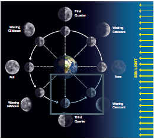
It is probably easier to understand the waxing and waning of Moon in the order of new moon & full moon and then how the first and third quarter moon (half-moon) appear and then the phases in between.
Sun is the source of light. Sun light falls on the spherical earth, but only on the side facing Sun. The opposite side of Earth is without sunlight. As the Earth spins day and night follows as different parts of Earth appear before the Sun. That is at all times one half of Earth is illuminated by Sun and one half is in darkness.
Likewise, at all times one half of Moon is illuminated by Sun and the opposite side is shroud in darkness.
As shown in the diagram, when the moon is positioned between the earth and sun, notice all the illuminated part of Moon is away from Earth. Hence, we cannot see any part of the illuminated side of the Moon. Only the dark side of Moon is towards Earth. When the moon is in this position, we have new moon.
Now look at the moon when it is behind the Earth. Now the portion of the moon illuminated by sun is totally towards Earth. The dark side is away from the Earth. This means the moon will appear to be round in the sky. This is full moon.
When the Sun, Earth and Moon are in 90-degree angle how will the moon appear to a person on the surface of the Earth? Now if you look at the portion of moon facing Earth, we will see half if it illuminated and half is dark side. Thus, the moon will appear as half-moon. The half-moon during the waxing period is called as first quarter and the half-moon during the waning period is called as third quarter. figure sun moon and earth are at right angles.
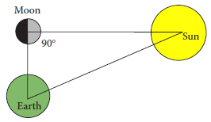
Once we understand those four key moon phases, the phases between them should be fairly easy to visualize.
The word crescent refers to the phases where the moon is less than half illuminated. The word gibbous refers to phases where the moon is more than half illuminated. Waxing essentially means “growing” or expanding in illumination, and waning means “shrinking” or decreasing in illumination. Note all so that these discoveries could be made with naked eye. You do not need telescope or any modern equipment.
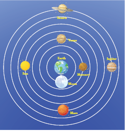
Moon going around Earth with 27-day period nicely explained its motion. However, astronomers in ancient times faced problem in explaining the motion of the then known five planets- Mercury, Venus, Mars, Jupiter and Saturn.
Moon in the background of stars moved everyday eastwards nicely. However, for example, if we were observing the motion of Mars from January, it would appear to move eastward in the background stars. That is the position of mars today will be near a star which is east of the star near which it was yesterday. However, on June 28, we will see a change. From that date the Mars would appear to move west rather than its normal eastward motion. This reversal of direction of planets is called as ‘retrograde motion’. If we continue to observe, on August 28 once again the Mars would appear to reverse the direction and again on its usual eastward motion in the celestial sphere. Usually Jupiter is brighter than Mars, however, around the period of retrograde motion the Mars was much bright than other times; even brighter than Jupiter.
Other planets also exhibited number of puzzling behaviors. Venus and Mercury always appeared very close to Sun, and hence never appeared in the midnight sky. The brightness of Jupiter also varied again when it exhibited retrograde motion. For example, in 2018, Jupiter reversed its direction of motion on March 9, 2018 and again resumed its normal eastward motion on July 11, 2018.
The simple geocentric model, where planets go around the Earth could not explain why the brightness of the planets changed, and why they reversed their directions. Change in brightness and retrograde motion would be impossible if we assumed that the planets were at the same distance at all times from Earth.
To explain the puzzling phenomena astronomers in early times proposed a change in the simple geocentric model. This is called as epicycle model.
Ptolemy within bracket 2nd century in Greece, Aryabhatta in India and others used the epicycle model to explain the motion of the celestial objects. Their models were improved by generation of astronomers like Tycho Brahe and Neelakandan Somayaji.
Although, the model explained many phenomena there were number of mismatches. The model was becoming messy.
Telescope was invented by Hans Lippershey but Galileo used it for studying the sky for the first time. The telescope showed more universe was than visible to naked eye. With his simple telescope matching toy telescopes of today, Galileo was able to see mountains on the Moon, small dim stars invisible to naked eye, sunspots on the face of Sun. He was able to demonstrate that the milky way, a hazy bright patch in the sky is nothing but thousands of stars huddled together, Jupiter had moons going around it and Saturn had mysterious appendage which we now know as rings.
One of the most startling observations he made was related to telescopic observation of Venus. This convinced him to accept the theory of the Polish Astronomer Nicolas Copernicus, that it is not Sun, planets and Stars that go around Earth, but it is Earth and other planets that go around the Sun- heliocentric theory.
Dissatisfied with the messy epicycle model Nicolas Copernicus, radically proposed that the model will become simple if we assume Sun is at the center and all planets, including Earth, go around it.
Suppose, Earth and Mars are on the two sides of the Sun, then Mars would be far and appear dim, compared to when they are on the same side. Earth orbit around Sun in 365 days, whereas Mars takes 687 days. This implies at times Earth will overtake Mars. When the Earth is approaching and overtaking Mars, the Mars would appear to exhibit retrograde motion. In short, all the observed phenomena could be explained in a simple way.
Galileo found that his observation of Venus gave the observational evidence to support the heliocentric theory. Galileo observed Venus in 1610 to 1611 with a telescope. To naked eye, Venus is just a gleaming bright spot. However, through a telescope, the shape of the planet can be seen. Galileo was startled to find like Moon Venus too exhibited phases. The shape varied from crescent to gibbous. Also, the size of the planet varied. When the planet was in gibbous phase the size was small, and when it was thin crescent the size was many folds higher.
As the Venus went around the epicycle, as shown in the diagram Venus would exhibit phases. Also, at times the planet would be nearer, making the apparent size grow bigger and at times for making the apparent size smaller. Thus, the variation in the brightness can also be explained.
It became clear to Galileo that the geocentric epicycle model will not help in accounting for the observed phases of the Venus.
Look at the above diagram. If the Venus was going around the Sun, and its orbit is inside that of Earth, Venus would appear always near the Sun in the sky. It can never be seen in the midnight sky. Secondly when it is near the Earth, it would be brighter and bigger compared to when it is on the other side of the Sun. Thirdly only if the Venus is revolving around the Sun, it can exhibit gibbous phase, and the size of the gibbous phase smaller than the crescent phase. If the Venus was revolving around the Earth, we can never see the gibbous phase of the Venus and it would be seen only if it is orbiting the Sun. This clinching observational evidence proved that at the least Venus orbited around the Sun. Further evidences collected by astronomers using telescope and other advanced modern instruments gave enough evidence that all planets revolve around the Sun.
If Galileo were around today, he would surely be amazed at exploration of our solar system and beyond by I S R O Indian Space Research Organization, N A S A National Aeronautics and space administration , Russian space agency and others.
Now we can observe planets orbiting around other stars called exoplanets proving that not only planets orbit around the Sun in solar system, but all around the universe such planetary systems exist. Who knows, in some of there could be life and in rare cases intelligent life, like humans wondering and exploring universe. Imagine a future time when such life meets us; how exciting and momentous it would be!
You are a student who belong to a particular class studying in seventh standard. In your school, there might me many sections for seventh standard. Likewise, there are sixth standard class, eight standard class and so on. All of them together make the school. Likewise, our Sun is a star with a planetary system. Billions of such stars constitute a system called as galaxy. The name of our galaxy is, Milky Way. Like Milky Way, there are at least hundreds of billions of galaxies in the Universe.
How did all these come about? Where they in existence always or was there a beginning?
When we observed other galaxies, we found a strange behavior. All the galaxies were appearing to move away from us. Further, farther they are faster they appear to move. Cosmologists, scientists who study the structure and evolution of universe that is cosmos, reason that this simply at one point of time in the past all matter was confined in a single point and since then it has started to expand.
The event when the matter confined in a single point and began to expand is called ‘big bang’. This is considered as the origin of our universe as we know it.
The Big Bang Theory is the prevailing model of the evolution of the Universe. Under this theory, space and time emerged together about 14 billion of years ago. At that time, the entire Universe was inside a bubble that was thousands of times smaller than a pinhead. It was hotter and denser than anything we can imagine. Then it suddenly expanded. The present Universe emerged. Time, space and matter all began with the Big Bang.
In a fraction of a second, the Universe grew from smaller than a single atom to bigger than a galaxy. And it kept on growing at a fantastic rate. It is still expanding today. Over the next three minutes, the temperature dropped below 1 billion degrees Celsius. After 3 lakhs years, the Universe had cooled to about 3000 degrees. Atomic nuclei could finally capture electrons to form atoms. At that stage of the evolution of the Universe, it was filled with clouds of hydrogen and helium gas. Giant clouds of hydrogen and helium were gradually drawn to the places where dark matter was most dense, forming the first galaxies, stars, and everything else seen today.
We cannot see anything that happened during the first 3 lakhs years of the Universe. Scientists try to work it out from their knowledge of atomic particles and from computer models. The only direct evidence of the Big Bang itself is a faint glow in space, called cosmic microwave background.
As millions of years passed, the dense areas pulled in material because they had more gravity. Finally, about 100 million years after the Big Bang, the gas became hot and dense enough for the first stars to form. New stars were being born at a rate 10 times higher than in the present-day Universe. Large clusters of stars soon became the first galaxies.
Box News:
The Hubble Space Telescope and powerful ground-based telescopes are now beginning to find galaxies that were created within a billion years after the Big Bang. These small galaxies were much closer together than galaxies are today. Collisions were common. Like two flames moving towards each other, they merged into bigger galaxies. Our Milky Way galaxy came together in this way.
As stated above universe is constituted of galaxies, just as lot of houses in our locality constitute a village or a city. We have lot of things such as rooms, furniture etcetera. in our homes. Likewise, lot of stellar objects such as stars, planets, asteroids, and meteors are the building blocks of our universe.
Box News
More to Know:
Astronomical unit: The average distance between the Earth and the Sun is called an astronomical unit. It is denoted by ‘a u’.
1 a u equal to 1 point 496 multiply 10 power 8 kilometre
Light year: The distance travelled by light in one year is called a light year. It is denoted by ‘l y’.
1 l y equal 9 point 4607 multiply 10 power of 12 kilometre
Parsec: A parsec is defined as the distance at which one astronomical unit subtends an angle of one arc second. It is denoted by ‘p c’
1 p c equal to 3 point 2615 l y equal 3 point 09 multiply 10 power of 13 kilometre
Galaxies:
A galaxy is a large collection of stars or cluster of stars and celestial bodies held together by gravitational attraction. There are about billions of galaxies in the universe. Most galaxies range from thousand to ten thousand parsec in diameter. As we have different types of houses in a locality, the galaxies are also of different types.
There are various types of galaxies such as spiral, elliptical, barred spiral and irregular.
Spiral Galaxy
Spiral galaxies consist of a flat, rotating disk containing stars, gas and dust, and a central concentration of stars known as the bulge. These are often surrounded by a much fainter halo of stars. Spiral galaxies are named by their spiral structures that extend from the center into the galactic disc. The spiral arms are sites of ongoing star formation and are brighter than the surrounding disc because of the young, hot stars that inhabit them.
Elliptical Galaxy
An elliptical galaxy is a type of galaxy having an approximately ellipsoidal shape and a smooth image. Unlike flat spiral galaxies with organization and structure, elliptical galaxies are three-dimensional, without much structure, and their stars are in somewhat random orbits around the center. Interestingly Stars found inside of elliptical galaxies are on an average much older than stars found in spiral galaxies. Elliptical galaxies tend to be surrounded by large numbers of globular clusters.
Barred Spiral
A barred spiral galaxy is a spiral galaxy with a central bar-shaped structure composed of Stars. Bars are found in approximately in two-thirds to one third of all spiral galaxies.The Milky Way Galaxy, where our own Solar System is located, is classified as a barred spiral galaxy.
Irregular Galaxy
An irregular galaxy is a galaxy that does not have a distinct regular shape, unlike a spiral or an elliptical galaxy, they are often chaotic in appearance, with neither a nuclear bulge nor any trace of spiral arm structure. About one fourth of the galaxies found so far are of this type.
Cosmologists say that some irregular galaxies were once spiral or elliptical galaxies but were deformed by an uneven external gravitational force. Irregular galaxies may contain abundant amounts of gas and dust.
The Milky Way is the galaxy in which our solar system is located. The diameter of Milky Way is over 1,00,000 light years. The Milky Way includes stars smaller than our Sun as well as many other stars that are thousands of times bigger than the Sun. It includes many other celestial bodies of gases, clouds of dust, dead stars, newly born stars, etcetera. It is also thought to contain at least 100 billion stars. The galaxy that is closest to our Milky Way is Andromeda. The descriptive “milky” is derived from the appearance from Earth of the galaxy a band of light seen in the night sky formed from stars that cannot be individually distinguished by the naked eye. In Indian mythology, this patch called as Akasha Ganga. From the Earth, the Milky Way appears as a band because its disk-shaped structure is viewed from within. Galileo first resolved the band of light into individual stars with his telescope in 1610. Until the early 1920s, most astronomers thought that the Milky Way contained all the stars in the Universe. Observations by Edwin Hubble showed that the Milky Way is just one of many galaxies.
The Milky Way does not sit still but is constantly rotating. Our solar system is located within the disk of the galaxy, about 27,000 light years away from the center of the galaxy. The solar system travels at an average speed of 8,28,000 kilometer per hour. Even at this rapid speed, the solar system would take about 230 million years to travel all the way around the Milky Way. When the solar system was in the same spot as it is now, there were no humans, no Himalayan Mountain on Earth and the dinosaurs were roaming around the Earth.
Tucked inside the very center of the galaxy is a monstrous black hole, billions of times as massive as the sun. Although, black holes cannot be directly viewed, scientists can see their gravitational effects as they change and distort the paths of the material around it, most galaxies, like our milky way, are thought to have a black hole in their heart.
Constellation
A constellation is a recognizable pattern of stars in the night sky when viewed from the Earth. International Astronomical Union has classified 88 constellations to cover the entire celestial sphere. Many of the old constellations have Greek or Latin names and are often named after mythological characters.
Ursa Major within bracket Sapatha Rishi Mandalam is a large constellation and it covers a large part of the sky. The most striking feature of this constellation is a group of seven bright stars known as big dipper seven Sages in Indian astronomy.
Ursa Minor in Lattin means ‘the little bear’ it lies in the northern sky. The Pole star Polaris within bracket Dhrua lies within this constellation. The main group, ‘little dipper’, consists of seven stars and is quite similar to that found in Ursa Major.
Orion was a hunter in Greek mythology. The constellation comprises around 81 stars out of which all but 10 are too faint to be seen with naked eye.
Different constellations become visible in the sky at different times in the year. This happens due to the revolution of the Earth around the Sun.
Unlike galaxy, constellations are mere optical appearance and not real objects. In galaxy stars are bound by gravity and constitute a system. In a constellation, one star may be near and another very very far, but because they are in the same direction appear to be near to each other in the sky.
Name of Constellations Indian Name |
English Name |
Indian Name Mesham |
English Name Aeries |
Indian Name Rishabham |
English Name Taurus |
Indian Name Midhunam |
English Name Gemini |
Indian Name Kadakam |
English Name Cancer |
Indian Name Simmam |
English Name Leo |
Indian Name Kanni |
English Name Virgo |
Indian Name Thulam |
English Name Libra |
Indian Name Vrischikam |
English Name Scorpio |
Indian Name Dhanusu |
English Name Sagittarius |
Indian Name Makaram |
English Name Capricorn |
Indian Name Kumbam |
English Name Aquarius |
Indian Name Meenam |
English Name Pisces |
Stars
A Star is a luminous heavenly body that radiate energy. With naked eyes, we can see nearly 3000 stars in the night sky and many more with the help of a telescope. The stars are remotely located and appear as tiny dots of light. Their light travels long distances to reach us. The atmosphere disturbances do not allow light to reach us in a straight line path. Because of this the stars appear to twinkle. The Sun is the nearest star to the Earth. The next nearest star is Alpha Centauri
Satellites
An object that revolves around a planet in a stable and consistent orbit is called a satellite. Satellites can be classified into two categories natural and artificial.
Natural satellites
All natural objects revolving around a planet are natural satellites. They are also called moons. Most moons are spherical, the ones that are not usually asteroids or meteors that were captured by the strong gravity of a planet. All planets except mercury and Venus in our solar system have moons. Earth has only one moon- whereas planets like Jupiter and Saturn have more than 60 moons.
Artificial satellites
Artificial satellites are manmade objects placed in an orbit to rotate around a planet – usually the Earth. The world’s first artificial satellite launched was Sputnik-1 by Russia, Aryabhatta was the first satellite launched by India. These satellites are used in television and radio transmission, studying agriculture yield, locating mineral resources, weather forecasting, locate different places on earth.
ISRO
The Indian Space Research Organization I S R O is the space agency of the Government of India headquartered in the city of Bangalore. Its vision is to “harness sustain and augment space technology for national development while pursuing space science research and planetary exploration.
Know your Scientist?
Subrahmanyan Chandrasekhar 19 October 1910 to 21 August 1995 was an Indian American astrophysicist who spent his professional life in the United States. He was awarded the 1983 Nobel Prize for Physics with William A Fowler. His mathematical treatment of stellar evolution yielded many of the best current theoretical models of the later evolutionary stages of massive stars and black holes. The Chandrasekhar limit is named after him. Chandrasekhar worked on a wide variety of physical problems in his lifetime.
Formed in 1969, ISRO superseded the erstwhile Indian National Committee for Space Research (INCOSPAR) established in 1962 by the Scientist Vikram Sarabhai. The establishment of ISRO thus institutionalized space activities in India. It is managed by the Department of Space, which reports to the Prime Minister of India.
ISRO built India’s first satellite, Aryabhatta, which was launched by the Soviet Union on 19 April 1975. It was named after the Indian astronomer Aryabhata. In 1980, Rohini became the first satellite to be placed in orbit by an Indian-made launch vehicle, SLV 3. ISRO subsequently developed two other rockets: The Polar Satellite Launch Vehicle with in bracket P S L V for launching satellites into polar orbits and the Geosynchronous Satellite Launch Vehicle with in bracket G S L V for placing satellites into geostationary orbits. These rockets have launched numerous communication satellites and earth observation satellites. Satellite navigation systems like GAGAN and I R N S S have been deployed. In January 2014, I S R O used an indigenous cryogenic engine in a G S L V D 5 launch of the G SAT 14.
ISRO sent a lunar orbiter, Chandrayan 1, on 22 October 2008 and a Mars orbiter, Mangalyan, on 5 November 2013, which entered Mars orbit on 24 September 2014, making India the first nation to succeed on its first attempt to Mars, and ISRO the fourth space agency in the world as well as the first space agency in Asia to reach Mars orbit. Mangalyan was launched by P S L V X L C 25. On 18 June 2016 I S R O set a record with a launch of 20 satellites in a single payload. On 15 February 2017, I S R O launched 104 satellites in a single rocket with in bracket P S L V C 37 and created a world record. I S R O launched its heaviest rocket, Geosynchronous Satellite Launch Vehicle Mark III G S L V M k 3, on 5 June 2017 and placed a communications satellite G SAT 19 in orbit. With this launch, ISRO became capable of launching 4-ton heavy satellites.
I S R O launched Chandran 2 on July 22, 2019, Geosynchronous Satellite Launch Vehicle G S L V M k 3 M1. It entered the Moon’s orbit on August 20, 2019.
BOX NEWS:
DO YOU KNOW?
In 1989, Galileo Galilei was memorialized with the launch of a Jupiter-bound space probe bearing his name. During its 14-year voyage, the Galileo space probe and its detachable mini-probe, visited Venus, the asteroid Gaspra, observed the impact of Comet Shoemaker-Levy 9 on Jupiter, Europa, Callisto, IO, and Amalthea.
In order to avoid the possible contamination of one of Jupiter’s moons, the Galileo space probe was purposely crashed into Jupiter at the end of its mission in September 2003.
The field of study of the universe is called astronomy.
The universe consists of galaxies, planets, stars, meteorites, satellites and all other forms of matter and energy.
The half-moon during the waxing period is called as first quarter and the half-moon during the waning period is called as third quarter.
The word crescent refers to the phases where the moon is less than half illuminated. The word gibbous refers to phases where the moon is more than half illuminated.
The reversal of direction of planets is called as ‘retrograde motion’.
The geocentric theory followed by the ancient people proposed that the Earth is at the center and the sun and other planets revolve around it.
The helio-centric theory states that the sun at the center and the planets revolve around it
Galileo gave observational evidence to support the heliocentric theory.
A galaxy is a large collection of stars or cluster of stars and celestial bodies held together by gravitational attraction.
A constellation is a recognizable pattern of stars in the night sky when viewed from the Earth.
An object that revolves around a planet in a stable and consistent orbit is called a satellite.
The Indian Space Research Organization I S R O is the space agency of the Government of India headquartered in the city of Bangalore.
1. Abdul Kalam started his school education in Government school at Rameswaram. He was very much interested in science and mathematics during his school days.
2. He assisted his relative, a newspaper agent during his childhood to meet his educational expenditure.
3. During a field visit in his school days, Kalam wondered about the flying of birds and clarified his doubts from his teachers. This incident acted as an impetus for him to become a scientist and an aircraft engineer.
4. He got graduate degree in Physics in 1954. Then, in 1955, he joined MIT, Chennai to pursue his course on Aerospace Engineering.
5. After completing his studies at MIT, he designed an aircraft named ‘Nandhi’ using indigenous materials with the help of indigenous technologists, He operated that flight himself
6. He took charge as the Director of Indian Defence Research Development Organisation and the scientific advisor to the Defence Ministry of India in 1983.
7. Kalam successfully launched the ‘Rohini-1’ satellite using the India’s first satellite launch vehicle SLV-3 in 1980. He acted as the Project Director when the missiles Thrishul, Agni,Prithvi, Nag and Akash were designed in the Indian Defence.
8. India for the first time experimented nuclear explosion test named ‘Smiling Buddha’ in 1974. Kalam was one among the sixty Aeronautical Engineers in this project.
9. Abdul Kalam played a vital role in the nuclear explosion test project in Pokran named “Operation Sakthi” in 1998. The credit that the India has become a nuclear power goes to him.
10. Kalam worked in five missile projects of India. He was the most important behind the designing defence rocket of India
11. The Government of India awarded him the Bharatha Ratna. He was the President of India during the period from 2002-2007.
12. The missile man who quoted “Man needs difficulties because to enjoy the success they are needed to and you have to dream before your dreams can come true” lives among us even after his death. Let’s also sacrifice for the country like him.
Choose the correct answers
1. The moon takes dash ays to complete one revolution around the Earth
a. 25
b. 26
c. 27
d. 28
Answer: 27
2. If the Moon is appearing in the sky today near the star Karthikai, the position of the Moon after 27 days is near the star
a. Bharani
b. Karthikai
c. Rohini
d. Asvini
Answer: Asvini
3. Telescope was invented by
a. Han Lippershey
b. Galileo
c. Nicolas Copernicus
d. Ptolemy
Answer: Han Lippershey
4. The galaxy containing young and hot stars is
a. elliptical galaxy
b. irregular galaxy
c. cluster
d. spiral galaxy
Answer: Spiral Galaxy
5. With the launch of this satellite, ISRO became capable of launching 4-ton heavy satellites.
a. GSAT 13
b. GSAT 14
c. GSAT 17
d. GSAT 19
Answer: GSAT 19
Fill in the blanks.
1. Waxing of moon means dash
ANSWER: GROWING OR EXPANDING
2. Heliocentric model is proposed by dash
ANSWER: Nicolas Copernicus.
3. dash is the prevailing model of Evolution of the Universe
ANSWER: The Big Bang Theory
4. dash is a large constellation which covers a large part of the sky.
ANSWER: Ursa major
5. dash is the first satellite launched by India
ANSWER: Ariyabhatta
True or False – If False give the correct answer
1. On a full moon day, when the Sun is setting in the west, moon rises in the West.
ANSWER: False. Correct Statement: On a full moon day when sun is setting in west Moon rises in the East.
2. The word crescent refers to the phases where the moon is less than half illuminated.
ANSWER: TRUE
3. Galileo accepted the Geo-centric model.
ANSWER: False. Correct Statement: Galileo did not accepted the Geocentric model
4. Our Milky Way galaxy is identified as an elliptical galaxy.
ANSWER: False. Correct Statement: Our Milky way Galaxy is identified as on Galaxy.
5. The planet Venus in our solar system doesn’t have a moon.
ANSWER: TRUE.
Match the following.
1. Rohini GSLV Mark 3
2. GSAT14 GSLV Mark 3 M1
3. GSAT19 SLV 3
4. Chandrayaan 2 PSLV X L C 25
5. Mangalyaan GSLV D 5
Answer:
1. Rohini SLV 3
2. GSAT 14 GSLV D 5
3. GSAT 19 GSLV Mark 3 M1
4. Chandrayaan 2 GSLV Mark 3
5. Mangalyaan PSLV X L C 25
Analogy
1. Older stars: elliptical galaxies: younger stars: dash
Answer: Irregular galaxy
2. Nearest galaxy: Andromeda: Nearest star: dash
Answer: Alpha Centauri
Very short answer
1. The word dash refers to the phases where the moon is less than half illuminated with in bracket cresent or gibbous
Answer: cresent.
2. dash and dash planets never appear in the mid-night sky.
Answer: Mercury, Venus.
3. Number of days taken by the Mars to orbit around the Sun.
Answer: 687 days
4. In which phase does the size of the planet Venus is small?
Answer: When it was in Gibbous phase.
5. The only evidence of the big bang theory is dash
Answer: The only evidence of the Big Bang theory is a faint glow in space called Cosmic Microwave background.
6. The galaxy which contains abundant amount of gas and dust is dash
Answer: Spiral Galaxy
7. Which country launched the world’s first artificial launch vehicle?
Answer: Russia launched the world’s first artificial launch vehicle.
Short Answer Questions
1. What is epicyclic model?
2. Name the four different types of galaxies.
3. What is constellation?
4. Give the expansions of PSLV and GSLV
Answer in Detail
1. Explain the waxing and waning phases in Venus
2. Write short notes on constellations.
HOT Question
1. Neelan and Mala are having a conversation about our Universe. Neelan is telling our earth will be the only planet in the entire Universe to have a life with. But Mala is opposing his view by citing certain points. What would be the argument of Mala. Do you support Mala? Justify your stand.
ICT CORNER
PROCEDURE:
Step 1: Use the URL or scan the QR code to open the activity page.
Step 2: Click the start button and then Click anywhere to open side bar.
Step 3: Click the top most icon in the side bar then Click the RUN INTRO button to see the various views of the solar system and universe
Step 4: Click the bottom most search icon in the side bar to search a particular planet, constellation, stars and Spacecraft.
Step 5: By dragging the mouse left ,right, up and down you can see the various views and scroll the Mouse to zoom in and zoom out .
Step 6: Click the play button to see the solar system in year wise.
Universe and Space URL:
https://www.solarsystemscope.com/
https://play.google.com/store/apps/details?id=air.com.eu.inove.sss2
Unit 3
Polymer chemistry has a positive impact on your everyday life. Many of the materials you use are linked to polymer chemistry. When you get ready for school, you wear clothes, shoes, brush your teeth and take a school bag. Did you ever ask yourself what these items are made of? They are created from fibers. Fibers are made up of long chains of natural or synthetic polymers.
As a society, we are consuming more and more. The more things we buy the more things we throw away. 30 years ago, most of the waste in Tamil Nadu was biodegradable or easily recyclable. Today it is more complex. Many of the materials we use are non-biodegradable and difficult to recycle. For example, in the past people used many natural materials such as cotton, silk and jute fibers. Today we use a lot of synthetic materials such as plastics. In this lesson you will learn about polymers, different types of fibers, plastics and the waste we produce and how we should manage it.
The word ‘Polymer’ is of Greek origin. ‘Poly’ means many and ‘mer’ means basic smaller unit. Polymers are very long chains made of repeating smaller molecules called ‘monomers’ that are joined together by covalent bonds and the process is called polymerization. The diagram below shows how repeating monomers join to form a polymer.
Polyvinyl Chloride within bracket PVC is a common plastic used for water pipes. The monomer and polymers of PVC is shown below.
Compare the following things. Ice cubes and a polythene bag. In both the materials, there are large number of molecules combined together. Are both polymers?
Polymers can be classified into natural and synthetic polymers. Can you imagine that your body produces and you are made up of natural polymers? The most familiar polymers that we use in our daily life are man-made and synthetic.
3.2.2 Natural Polymers-Natural polymers are found in living systems that include proteins and carbohydrates in our bodies and cellulose in wood and paper. They play a very important role in living things to provide structural materials and molecules needed for life processes.
Protein polymers are made from amino acid monomers within bracket 20 different kinds of amino acids. Different combinations of the amino acid monomers create many different protein polymers. Examples of protein polymers include DNA, enzymes, silk, skin, hair, fingernails, feathers and fur.
Examples of carbohydrate polymers include cellulose, chitin and lignin found in plants. Cellulose is made of sugar molecules and is the main component of cotton used in clothing. Chitin is found in the cell walls of fungi such as mushrooms and exoskeletons of insects such as crabs and spiders. Lignin consists of a network of polymers and is important in giving structure to plants.
Synthetic polymers are man-made polymers produced by using raw materials from petroleum oil and gas. Plastics are synthetic polymers. When oils and gases are processed to make petrol, ethylene and propylene monomers are removed as by products. We have already seen that polymer such as the Poly Vinyl Chloride (PVC) is made up of many monomers joined together. Ethylene and propylene are the building block monomers that make up many different types of plastics.
Based on the nature of the monomers, the way they are arranged in the polymer and the characteristics of final polymer. There are grouped into different categories such as fibers, plastics, proteins. Let us study about few of them in the following sections.
We wear clothes, use bags, rope, blankets, etcetera. in our daily life. They are made of fibers. Once upon a time, people used natural fibers such as cotton and wool. Nowadays, we use a lot of synthetic fibers. All natural and synthetic fibers are polymers.
Observe the difference between the natural and synthetic fibres:
Natural Coconut Rope versus Nylon Fishing rope
Fibres are long strands of polymers interwoven to form linear, string-like structures. Fibers that are obtained from plant or animal sources are called natural fibres. Examples include cotton, coconut fibre, hair, wool and silk. Fibers that are made using raw materials from petroleum are synthetic fibres. Examples include polyester, acrylic and nylon. Historically, humans used natural plant fibres and animal fur for shelter, clothing and protection from the weather. Today, a large variety of natural fibres are still grown and processed such as cotton, silk, and wool. Natural fibres can be spun into filament, thread or rope. Then they can be woven, knitted, matted or bonded and are used to make clothing, containers, insulation material and many other products we use in our daily life. Three main sources of natural fibers are: (i) Animal Example: Silk moth (ii) Plants Example: Cotton (iii) Minerals Example: glass fibre.
The discovery of making synthetic fibers out of petrochemicals has replaced the use of many natural fibers. Synthetic fibers such as nylon, polyester and acrylic are used to make many different plastic items you use in your daily life such as clothing, blankets, tooth brushes and stuffing in cushions.